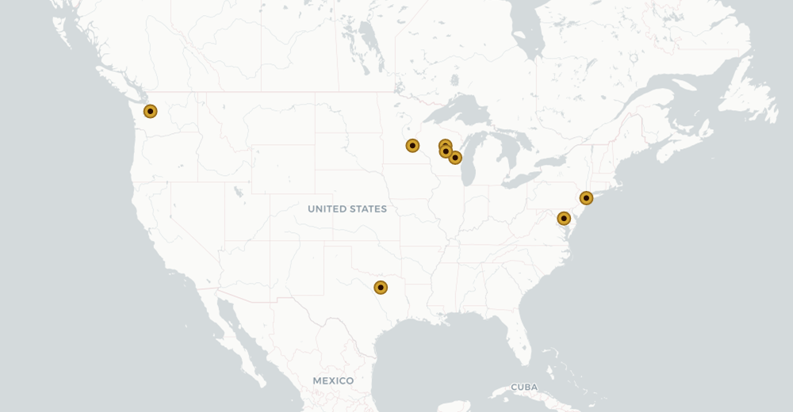

Music: “Mademoiselle from Armentières” (trad., WWI) · Lyrics: the Commodore · Performed & produced by Anthony J. Milan · Commissioned March 2026
Like most great undertakings of the Society, the Whiskey March was born of a late-night session at the clubhouse — the Commodore and Vice Commodore, minds suitably lubricated and ambitions suitably inflated — and then promptly languished for years beneath a fog of procrastination and honest forgetfulness. That it exists at all is something of a miracle.
The mandate was simple and faintly absurd: the Society required an anthem, and that anthem ought to be a sing-along — or at the very least theoretically capable of being sung, should the membership ever find itself sober enough to attempt it. The Commodore at last put nose to grindstone and found a producer, Anthony J. Milan, who grasped both the assignment and its ridiculousness with admirable speed. For the tune we turned to “Mademoiselle from Armentières,” the ribald march bawled across the trenches of the Great War by British and American troops alike — its Hinky-Dinky, parlez-vous refrain all but begging for new and less printable words.
Those words fell to the Commodore, who labored to ensure not a single line was idle: every lyric is bound to the Society, its lore, and its members — for this is no ordinary march, and the words must mean something. Anthony then went to town, performing and producing the whole affair into the rousing article you hear below, henceforth the backdrop to all our festivities.
Will this pack of animals ever truly be cajoled into singing it? Realistically, it would take all the whiskey in the world. But hey — at least we have something.
to the tune of “Mademoiselle from Armentières”
Our Commodore did chart the course, parlez-vous?
Our Commodore did chart the course, parlez-vous?
Our Commodore did chart the course,
Convened the club with cordial force,
Hinky-dinky, parlez-vous!
Olympia to Floral Park, parlez-vous?
Olympia to Floral Park, parlez-vous?
Olympia to Floral Park,
A banker, farmer, patriarch,
Hinky-dinky, parlez-vous!
Our pours are plenty, never small, parlez-vous?
Our pours are plenty, never small, parlez-vous?
Our pours are plenty, never small,
The printed measure? Lies to all,
Hinky-dinky, parlez-vous!
The tweed is tightly tailored thread, parlez-vous?
The tweed is tightly tailored thread, parlez-vous?
The tweed is tightly tailored thread,
No fleece, no flannel, none instead,
Hinky-dinky, parlez-vous!
Decorum dies when Schuster's near, parlez-vous?
Decorum dies when Schuster's near, parlez-vous?
Decorum dies when Schuster's near,
The first defendant to appear,
Hinky-dinky, parlez-vous!
The modern world we've long declined, parlez-vous?
The modern world we've long declined, parlez-vous?
The modern world we've long declined,
And thereby most of womankind,
Hinky-dinky, parlez-vous!
We sip, we boast, we lie, we toast, parlez-vous?
We sip, we boast, we lie, we toast, parlez-vous?
We sip, we boast, we lie, we toast,
To brothers absent from their post,
Hinky-dinky, parlez-vous!
When summer paints the fairways green, parlez-vous?
When summer paints the fairways green, parlez-vous?
When summer paints the fairways green,
The Northern Open's grandest scene,
Hinky-dinky, parlez-vous!
Now gather, gents, and raise the glass, parlez-vous?
Now gather, gents, and raise the glass, parlez-vous?
Now gather, gents, and raise the glass,
The Society shall always last,
Hinky-dinky, parlez-vous!
From the founding halls of Wausau to the far corners of the Republic, our chapters stand as outposts of taste, tradition, and the unyielding pursuit of the perfect dram.
